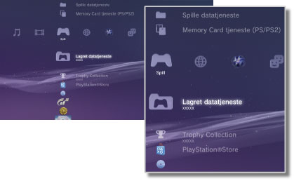

Spill > Kategorien Spill
Kategorien Spill
Følgende ikoner vises under  (Spill). Ikonene som vises, varierer avhengig av bruksvilkårene.
(Spill). Ikonene som vises, varierer avhengig av bruksvilkårene.

 |
PlayStation®Store | Vis informasjon fra PlayStation®Store. |
|---|---|---|
 |
Avslutt spillet | Avslutt PlayStation®3 programvareformat. Dette ikonet vises kun under spill. |
 |
(tittelnavn) | Spill av en PlayStation®3 Formatering programvare. Det vises et bilde når ikonet velges. |
  |
PlayStation®2 Format disk | Spille en PlayStation®2 formatering programvaretittel. |
 |
PlayStation® format disk | Spille en PlayStation® formatering programvaretittel. |
 |
Lagret datatjeneste | Kopier/slett eller vis informasjon om lagrede data for PlayStation® Formatering programvare. |
 |
Memory Card tjeneste (PS/PS2) | Opprett og tilordne spor for interne minnekort for å lagre data på programvare i PlayStation®2/PlayStation® Formatering programvare. Du kan også kopiere/slette eller vise informasjon om de lagrede dataene. |
 |
Spille datatjeneste | Du kan lagre ytterligere data for enkelte spill. Du kan slette eller vise informasjon om dataene. |
 |
Trophy Collection | Vis trophies du har vunnet i spill som støtter trophy-funksjonen. Når du oppnår visse nivåer eller fullfører nødvendige oppgaver i spillet, kan du vinne trophies for dine resultater. |
 |
(PlayStation®3 eller PlayStation®2 programvareformat installert på harddisken) | PlayStation®3 eller PlayStation®2 programvareformat installert på harddisken. Et miniatyrbilde for spillet vises. |
 |
(data lastes ned til harddisk) | Dette ikonet vises for spill eller utvidelsesdata som er lastet ned på harddisken. Dataene blir installert ved oppstart. Ikonet varierer avhengig av hvilke type data. |
Tips
 eller
eller  vises for innholdet som er begrenset av foreldrekontrollen. Innholdet kan spilles av ved å skrive inn et firesifret passord. Passordet kan angis under
vises for innholdet som er begrenset av foreldrekontrollen. Innholdet kan spilles av ved å skrive inn et firesifret passord. Passordet kan angis under  (Innstillinger) >
(Innstillinger) >  (Sikkerhetsinnstilling).
(Sikkerhetsinnstilling). - Hvis en enhet som ikke er kompatibel med HDCP-standarden (High-bandwidth Digital Content Protection), kobles til systemet med en HDMI-kabel, kan ikke video og/eller audio overføres fra systemet.
- Blu-ray-disker med opphavsrettsbeskyttelse kan bare overføre innhold på 1080p ved hjelp av en HDMI-kabel som er koblet til en enhet som er kompatibel med HDCP-standarden.
- I sjeldne tilfeller fungerer ikke disker og andre medier på riktig måte når de spilles av på PS3™-systemet. Dette er hovedsakelig på grunn av forskjeller i produksjonsprosessen eller kodingen av programvaren.
Merknader
- Enkelte PlayStation®2 eller PlayStation®-programvareformattitler kan ha en annen prestasjon på PS3™-systemet enn på PlayStation®2 eller PlayStation®-systemene, eller fungerer muligens ikke ordentlig med PS3™-systemet.
- PlayStation®2 programvareformat kan dessuten ikke spilles av på enkelte PS3™-systemer. For mer informasjon, se [Typer plater som kan spilles av], besøk SCE-websiden for ditt område eller se dokumentasjonen som fulgte med PS3™-systemet.